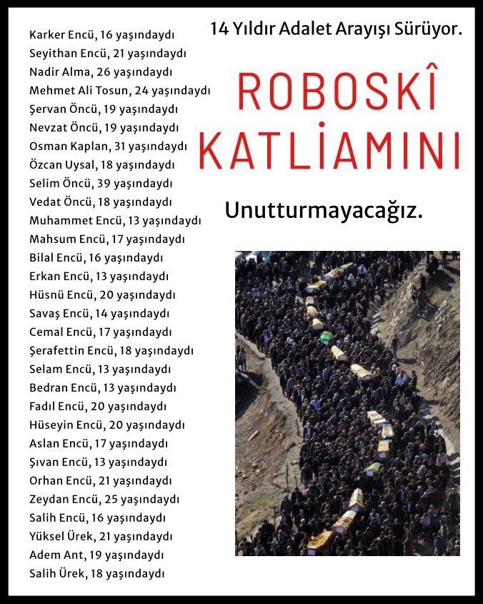
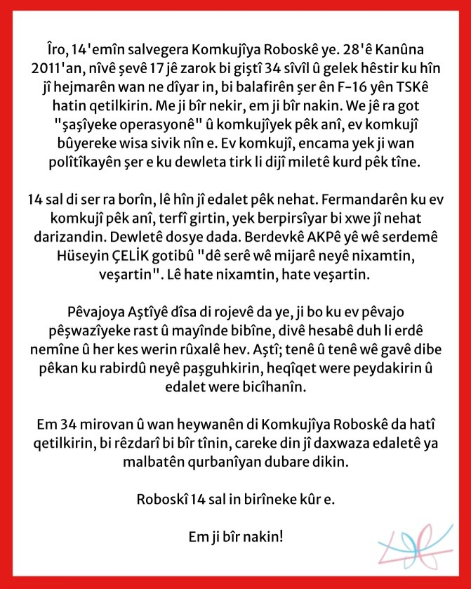
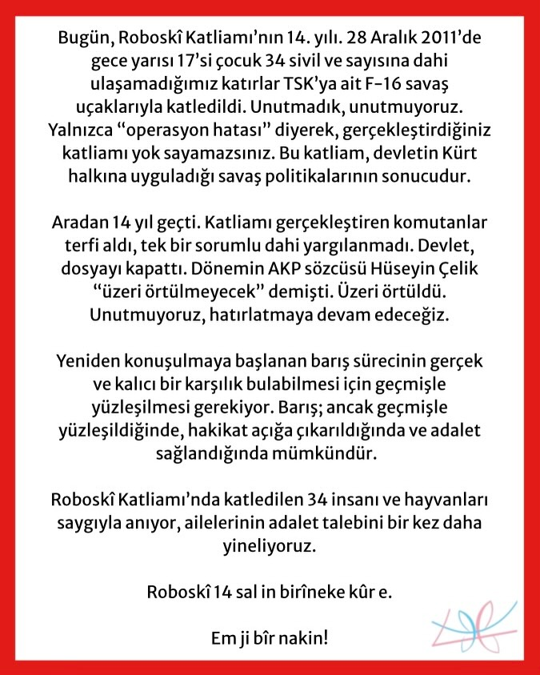

2025-12-30 07:11:00
Bugün, Roboskî Katliamı’nın 14. yılı. 28 Aralık 2011’de gece yarısı 17’si çocuk 34 sivil ve sayısına dahi ulaşamadığımız katırlar TSK’ya ait F-16 savaş uçaklarıyla katledildi. Unutmadık, unutmuyoruz. Yalnızca “operasyon hatası” diyerek, gerçekleştirdiğiniz katliamı yok sayamazsınız. Bu katliam, devletin Kürt halkına uyguladığı savaş politikalarının sonucudur.
Aradan 14 yıl geçti. Katliamı gerçekleştiren komutanlar terfi aldı, tek bir sorumlu dahi yargılanmadı. Devlet, dosyayı kapattı. Dönemin AKP sözcüsü Hüseyin Çelik “üzeri örtülmeyecek” demişti. Üzeri örtüldü. Unutmuyoruz, hatırlatmaya devam edeceğiz.
Yeniden konuşulmaya başlanan barış sürecinin gerçek ve kalıcı bir karşılık bulabilmesi için geçmişle yüzleşilmesi gerekiyor. Barış; ancak geçmişle yüzleşildiğinde, hakikat açığa çıkarıldığında ve adalet sağlandığında mümkündür.
Roboskî Katliamı’nda katledilen 34 insanı ve hayvanları saygıyla anıyor, ailelerinin adalet talebini bir kez daha yineliyoruz.
Roboskî 14 sal in birîneke kûr e.
Em ji bîr nakin!
//////


